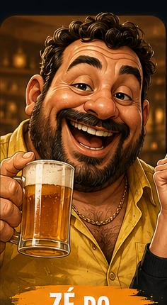

Faça uma pergunta real
Trabalho, dinheiro, relacionamento, rotina ou aquela decisão que você está adiando.

Tem uma teoria sobre tudo e provavelmente já contou isso três vezes.
Zé do Boteco é o filósofo informal da mesa do bar. Ele transforma qualquer dúvida em teoria, comparação improvável e conselho que parece duvidoso até começar a fazer algum sentido.
Conversar com Zé do Boteco →Você tem até 3 perguntas grátis por dia, compartilhadas entre todos os personagens.Teorias de boteco, analogias improváveis e conclusões que às vezes fazem mais sentido do que deveriam. O objetivo é divertir, não substituir orientação profissional.
O Zé parte de uma situação comum e constrói uma teoria de mesa de bar: exagerada, improvável e, de vez em quando, estranhamente útil. As respostas são entretenimento e não orientação profissional.
Trabalho, dinheiro, relacionamento, rotina ou aquela decisão que você está adiando.
A IA mantém o estilo de Zé do Boteco, com humor e personalidade próprios.
As respostas podem ser copiadas ou transformadas em card para compartilhar.
Relacionamento é igual comanda: se só um lado está consumindo, alguém vai pagar a conta sozinho.
Segunda-feira é o maior cemitério de planos fitness do país.
Condomínio é a prova de que diplomacia internacional começa dois apartamentos acima.
Exemplos editoriais do estilo do personagem. As respostas do chat são geradas no momento e podem variar.